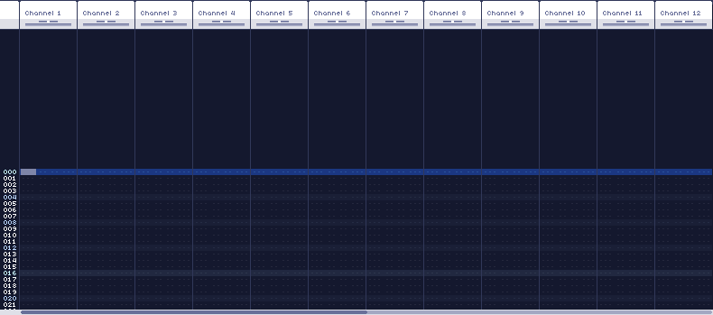
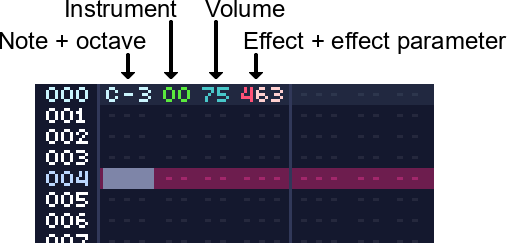

Frame Editor
The frame editor will likely be where you'll spend most of the time in WaveTracker. It is where you can create patterns for each channel.
The frame editor consists of all 24 channels in a song. Only 12 are visible at one time. Using ALT+Scroll or the scrollbar at the bottom will bring the other channels into view.
Each channel has the following layout:
Each channel has 4 columns that can hold instructions for it. The application must be in record mode (The cursor row must be red instead of blue. Pressing space toggles this) in order to input information in these fields.
-
Note Column
Displays notes with their octave (ex: F#4), note-cuts (---), or note-releases (===). - Note-cuts immediately end the note with an abrupt stop, the volume will jump to 0.
- Note-releases will trigger the release sequences of the instrument, if it has any. This can be used to make softer sounding releases that aren't so abrupt.
-
Instrument Column
Sets and triggers instruments from the instrument bank for the channel to use. - There are two types of instruments in WaveTracker, "Wave" instruments will appear as green, "Sample" instruments will be orange.
- Volume Column
Sets the channel volume as a percentage from 00-99. -
Effects Column
Sets channel effects. The format is Yxx, where Y is the effect type and xx is the parameter. Note that effects will stay on until you turn them off, to avoid cluttering up the column.
See the full list of effects for more information.
Notes are input using a piano-qwerty keyboard layout, illustrated below.
Pressing insert or delete will insert or delete rows, respectively. Pressing backspace will remove the previous row.
Channels can be muted or unmuted by clicking their headers. Double clicking a channel will solo it, and clicking on the leftmost part of the header will unmute all channels.
The cursor can be moved by either clicking a new location, or using the arrow keys.
Selections can be done by either clicking or dragging, or holding shift and moving the cursor.
See keyboard shortcuts for additional keyboard commands.